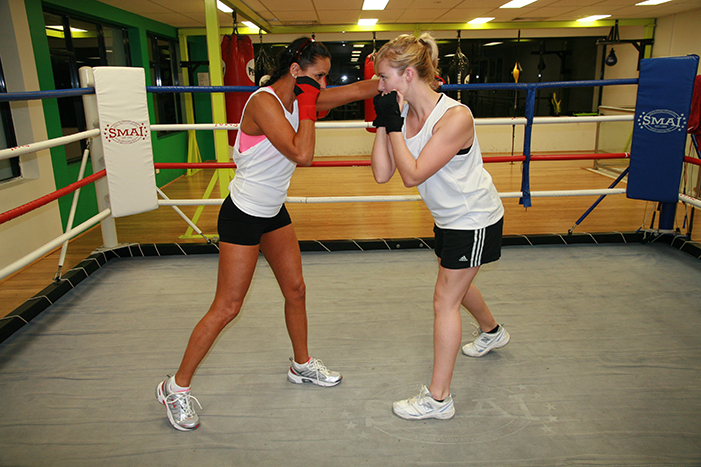
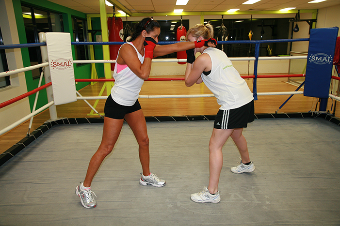

Dips
move your head slightly to the left; the incoming punch should go over your right shoulder. This movement is a far more risky maneuver than Outside-slip, as it will bring a defending boxer inside his opponent’s defense.
Outside Slip
Move your head slightly to the right, whilst punch slips over the left shoulder.